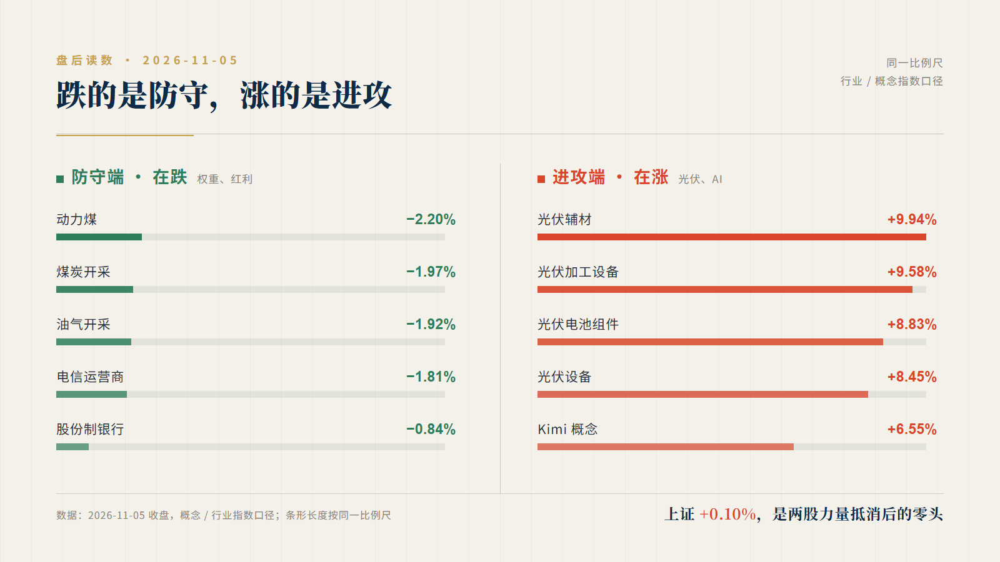

11 月 5 日收盘，我让程序把全市场的票扫了一遍。5927 只进了扫描池，剔掉停牌和没成交的，剩下 5573 只有价格。
扫完有三个数摆在那儿：
前两个数，今天到处有人在讲。第三个我还没见人提。
11 月 4 日，全市场有 118 只票封住涨停。今天开盘，这 118 只里有 116 只能取到完整数据，另外 2 只今天没取到，原因我没逐一核实。
这 116 只里，95 只今天是上涨的，占 81.9%。其中 23 只又封了涨停，剩下 72 只没封住，但也在涨。
这批票今天的涨幅，中位数 4.29%，平均 4.42%。
"平均涨幅"这个词很像研报用语，我平时也躲着它。4.42% 还是写出来了，因为它是这 116 只票摊出来的，不是我挑的。对昨天封在板上的大部分人来说，这一天是赚的。
今天上证收在 3689.91，涨 0.10%。
单看这一个数，会觉得今天什么都没发生。0.10%，连手续费都不够。
但同一时间，深证成指 11471.09 涨 1.19%，创业板指涨 0.87%，科创 50 涨 1.68%，北证 50 涨 1.79%。
深证、创业板、科创、北证四个都在涨，只有上证几乎没动。
上证里装的都是大块头——银行、煤炭、石油、电信。今天这几个都在跌：动力煤 -2.20%，煤炭开采 -1.97%，油气开采 -1.92%，电信运营商 -1.81%，农商行 -0.89%，股份制银行 -0.84%。
概念板块那一栏更直白（以下均为概念板块指数口径，不是持仓披露）：中特估 -0.48%，证金持股 -0.53%，大盘价值 -0.32%，权重股 -0.26%，红利股 -0.17%。
这几个标签，过去大半年被很多人拿来"买了不看"。今天一起绿了。跌幅都不大，方向倒是齐的。

光伏辅材 +9.94%。光伏加工设备 +9.58%。光伏电池组件 +8.83%。光伏设备 +8.45%。硅料硅片 +5.93%。
从辅材到设备再到组件，五个子板块的指数涨幅都在 5.93% 以上。
AI 这边：Kimi 概念 +6.55%，HJT 电池 +6.17%，TOPCon 电池 +6.06%，BC 电池 +5.11%，AI 视频 +5.02%。
主力资金净流入排前五的行业：电力设备 63.10 亿，半导体 61.04 亿，半导体设备 54.32 亿，传媒 34.92 亿，光伏设备 32.36 亿。
这份数据只有流入端，没有可比的流出端。它能排个名次，排不出"资金在撤离谁"。
今天这盘面，说"涨了"不太准确。涨的集中在光伏和 AI，跌的集中在银行、煤炭、石油、电信；上证那 0.10%，是这两边在加权指数里互相抵掉之后剩下的零头。指数是加权出来的，涨跌家数是数出来的，两者本来就可以不同向。
81.9% 只能说明一件已经发生的事：11 月 4 日封住涨停的那批票，在 11 月 5 日这天收盘时，大部分还在涨。这是往回看的事后统计。
明天会不会接着涨、这 95 只里哪一只还能涨、现在进去来不来得及——这三件事它都答不了。
今天这批票收盘时大部分还在涨。至少今天，没人急着跑。
81.9% 反过来是 18.1%。116 只里有 21 只今天是跌的。
跌得最深的是大连友谊 -9.75%，紫竹高科 -5.85%，沪电股份 -5.76%，宝明科技 -5.69%，冰山冷热 -4.44%。
这 21 只，昨天还在涨停板上，今天把前一天涨的吐回去了一部分。
同一个市场，同一天，一边的平均涨幅是 4.42%，另一边跌得最深的那只跌了 9.75%。两个数摆在一起，谁也不打架。"赚钱效应"是统计口径的词，说的是这一百多只票的整体。
隔夜美股（11 月 4 日收盘）：道指 +3.03%，纳指 +1.44%，标普 500 +1.58%。微软 +6.68%，苹果 +5.31%。
但费城半导体指数 -3.13%，英伟达 -3.17%，英特尔 -3.77%。
今天 A 股半导体 +2.78%，主力净流入 61.04 亿。
美股的芯片在跌，A 股的芯片在涨，同一天。我不打算给这个现象编一个原因——手里没有能证明因果的数据，硬凑"东升西降"或者"资金回流"，都只是听起来顺。
我只把它记下来，等后面几天再看它对不对。
一、防守那半边在跌，银行、煤炭、石油、电信；进攻那半边在涨，光伏和 AI 都在前排。上证是加权指数，两边一抵就只剩 0.10%。
二、这两个数一起看，比单看任何一个都接近今天的样子。
三、84 只涨停、0 只跌停，这个组合我只当情绪读。
11 月 5 日，涨的和跌的分别落在两个半区。但今天没人急着跑，不等于明天不会有人跑。
明天开盘我会看两件事：光伏那条链有没有第二天，煤炭那批止不止跌。这两件只要有一件不成立，今天这个结构就得重算。
这篇里的每个数字，你都能在自己的行情软件里复现：上证 3689.91、涨 4869 跌 624、涨停 84 只（收盘封板口径）。如果复现不出来，就当我说错了，以你看到的为准——不同终端口径本来就有差异，我不认为我这份更权威。
我没有账户，不交易，也不持有文中提到的任何标的。这一篇做的事情只有一件：把收盘后公开的数摆整齐，再说说我看到的结构。明天怎么走我不知道，也不打算猜；能不能买、买多少，是我替不了你、也不该替你做的决定。
本文由 AI 辅助生成，数据经人工核对；不构成任何投资建议，不推荐任何个股，不代客理财，不承诺收益。市场有风险，据此操作，盈亏自负。